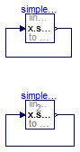

Simple steady state initialization of an FMU leading to a linear system of equations over FMUs during initialization
Information
With this test model it is tested how the initialization of an FMU
can be changed in the environment where this FMU is used. There are two
identical FMUs in this model:
- simpleWithFixedState uses the default initialization defined in the FMU
- simpleWithSteadyState is the same FMU, but provides a parameter to the start value of the
FMU and this parameter has fixed=false. Additionally, the state derivative of the FMU
is set to zero in the environment leading to a steady-state condition.
Extends from Modelica.Icons.ExamplesPackage (Icon for packages containing runnable examples).
Package Content
| Name |
Description |
 WithFMUsReference WithFMUsReference
|
Reference solution in pure Modelica using exactly the same structuring as in Model WithFMUs |
| WithFMUs
|
Solution with FMUs |
 FMUModels FMUModels
|
For all models in this package an FMU must be generated |
Reference solution in pure Modelica using exactly the same structuring as in Model WithFMUs

Information
Extends from Modelica.Icons.Example (Icon for runnable examples).
Parameters
| Type | Name | Default | Description |
|---|
| Real | p | | |
Modelica definition
model WithFMUsReference
"Reference solution in pure Modelica using exactly the same structuring as in Model WithFMUs"
extends Modelica.Icons.Example;
parameter Real p(start=2,fixed=false);
FMUModels.SimpleLinearModel1 simpleWithFixedState;
FMUModels.SimpleLinearModel2 simpleWithSteadyState(x(start=p));
initial equation
der(simpleWithSteadyState.x) = 0;
equation
connect(simpleWithSteadyState.y, simpleWithSteadyState.u);
connect(simpleWithFixedState.y, simpleWithFixedState.u);
end WithFMUsReference;
Solution with FMUs
Information
Extends from Modelica.Icons.Example (Icon for runnable examples).
Parameters
| Type | Name | Default | Description |
|---|
| Real | p | | |
Modelica definition
model WithFMUs
"Solution with FMUs"
extends Modelica.Icons.Example;
parameter Real p(start=2,fixed=false);
FMUModels.SimpleLinearModel1 simpleWithFixedState;
FMUModels.SimpleLinearModel2 simpleWithSteadyState(x(start=p));
initial equation
der(simpleWithSteadyState.x) = 0;
equation
connect(simpleWithSteadyState.y, simpleWithSteadyState.u);
connect(simpleWithFixedState.y, simpleWithFixedState.u);
end WithFMUs;
Automatically generated Fri Apr 25 16:23:26 2014.
 FMITest.Initialization.LinearSystems.SimpleSteadyState.WithFMUsReference
FMITest.Initialization.LinearSystems.SimpleSteadyState.WithFMUsReference